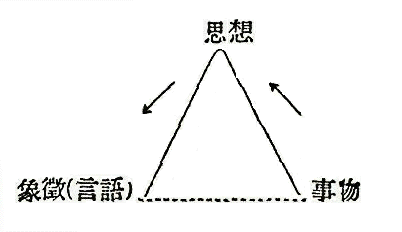

［＃底本ではここにオグデンによるベーシック・ワードのリストが掲げてあるが、オグデンの著作権は現在保護期間中なので、省略する。］
［＃改丁］
はしがき
此の小稿は Basic English の基礎理論と組織との概要及び英語教育に於けるその價値を出來るだけ平明に解説しようと試みたものである。Basic は決して850語の單なる list に止まるものではないのである。動的であつて有機的なそれ自體一つの纒つた組織を成し、その運用によつて日常の用を辨じ得る仕組になつてゐるのである。然も Basic は總て英語の傳統に從つて考案され、英語の特異性が十分に利用されたものであるから、その研究は英語研究の全體的見地から考へて見て、決して無駄なことではないと思はれる。
我國に於いては、Basic の組織をよく理解してゐる人が比較的尠いやうに思はれる。幸に讀者諸氏が本稿によつて、Basic の如何なるものであるかを理解せられて、更にその關係文獻を渉獵するの勞を惜まず、檢討を加へられて Basic の組織を全體として眺め、その長所を採つて英語教育に應用せられるならば、筆者の幸福のみに止まらないであらうと思ふ。
昭和十六年三月
高田力
［＃改丁］目次
はしがき
 . ベーシック英語
. ベーシック英語 . 考案の起源と展開
. 考案の起源と展開 . 語彙制限の諸原則
. 語彙制限の諸原則1. 動詞の排除
2. 贅語の排除
3. 意味の擴張と特殊化
4. 複合語
5. -er, -ing, -ed の語尾
6. 慣用句
 . ベーシック選集
. ベーシック選集1. 簡單なる動作
2. 複雜なる動作
3. その他の注意
 . ベーシックと英語教育
. ベーシックと英語教育 . 文例
. 文例［＃改丁］
. ベーシック英語Basic English（基本英語）は如何なる英語であるか簡單に言ふならば、元來多くの點で最も簡易化の可能性に富む英語の持つ用辭上の特異性を利用して、複雜なる思想をも、人間の生活意識に最も必要なる要素的な語彙のみで言ひ表はし得るやうに、大英語を合理的に壓縮整理して得た、それ自體有機的な一つの纒つた組織を成す簡易化された小英語とも言ふべきものである。而して、英語が世界に於いて通用範圍が最も大きいと言ふ點から、極めて短期間に習得しうる國際補助語とする意圖を以て、英國ケムブリッヂの言語心理學者オグデン（C.K. Ogden, 1889- ――）氏によつて、多年苦心研究の結果案出されたものである。
Basic English の組織の主體を成すものは850語であつて、それを分類すれば、「作用詞」（operators）と名づける動詞16語、助動詞 may（might）, will（would）（及び「作用詞」中の be, do, have も助動詞として用ゐる）、前置詞、接續詞、冠詞、代名詞、副詞等100語、一般的な事物の名（名詞）が400語、繪に描き得る物の名が200語、及び性質を表はす語（形容詞）が150語（其の中、50語は good に對して bad；clean に對して dirty の如く反對の意味を表はすもの）となつてゐる。此等の語を運用する文法は普通の英語と同じで、名詞の複數には 's' を附け、300の名詞及び少數の形容詞（普通の英語で動詞としても用ゐられるもの）の語尾に '-er' ('-or'),'-ing', 及び '-ed' を附けて派生語（例へば、support から supporter 支持（扶養）する人、味方、賛成者、supporting 支持（扶養）して、支持（扶養）すること、supported 支持（扶養）されて）を作り、副詞は形容詞に '-ly' を附け、比較は '-er', '-est' の語尾を用ゐると共に 'more', 'most' で示す。所有を示すには '-'s' 又は 'of' を用ゐ、形容詞の或るものの前には 'un-' を附加して反對の意味の形容詞を作り得る。疑問文は語位の轉換又は 'do' を使ひ、動詞、代名詞の變化は普通の通りである。又850語を適當に組合せて得た平易な250個の慣用句を使用してもよい。度量衡、數詞、貨幣、暦詞及び諸國共通の語は英語に依る。又一般科學用語100と各種の科學、商業等の特別用語50とが用意されてある。
［＃改ページ］
. 考案の起源と展開さて茲に Basic English の組織せられるに至つた來歴を簡單に述べると、オグデン氏が1919年より1922年に亘つて、その名著 The Meaning of Meaning＊（「意味の意味」、リチャーヅ（I.A. Richards, 1893- ――）博士との共著）を執筆の頃に溯る。本書は、その副題を「言語の思想に及ぼす影響及び象徴學の研究」と言ひ、言語とは象徴（symbol）の一種であつて、其の意味とは象徴（記號）としての言語が事物を指示する作用である、と言ふ理論を詳述したもので、その言語、思想、事物の關係を論じた無底邊三角形（同書第一章）は有名である。即ち、事物と思想、思想と言語とは、それぞれ直接の關係を持つてゐるが、事物と言語とは間接の關係しか持つてゐない、と言ふのである。而して、此の三角形は多くの場合に底邊を持つてゐないことゝなる。即ちシムボルとしての言語と事物とを結合する線が缺けてゐることが多いのである。我々の日常用ゐる言葉の上に多くの錯誤が生じて來るのは、こゝに原因する。何故ならば、我々はシムボルと事物との間に直接の關係があるかのやうに思ひ込んでゐるのみならず、さう考へることが言葉を使用する時に便利であるとさへ思つてゐるからである。若し、我々が此の三角形に於いて、その底邊が缺けてゐるといふことを反省するならば、言語上の誤解が生ぜずにすむだらうと言ふのである。尚ほ此は本居宣長の「こと、こころ、ことば」の三角關係の學説及び富士谷御杖の學説と比較して垣内松三氏によつて研究されてゐる。

＊ 石橋幸太郎氏による此の書の第三版の完譯が昭和十一年に刊行せられた。
さて其頃オグデン氏がリチャーヅ氏等と共に、諸種の語（words）の意味の定義の研究調査に從事してゐた際、或る幾つかの要素的な語が常にその中に用ゐられることを發見し（尤も、この事は十七世紀に於いてライプニッツ（Leibnitz）やウィルキンズ（John Wilkins）等の興味を唆つた問題ではあつたが）、進んで此等の重要なる基本的語彙のみを以て、それ以外の多くの複雜なる内容を持つ語の意味を明瞭に言ひ表はし得ることに想到した。更に進んで、此等の要素的な語彙のみを以て一種の基本的な英語を構成することが出來るだらうといふことを考へて研究を續けた。斯くして、一般普通の思想の交換を容易ならしめる英語による國際語の考案は、當時既にオグデン氏の主なる關心事の一つであつたのである。併し、その當時にあつては、氏の此の試みの前途には多くの障碍が横はつてゐる樣に思はれた。例へば、假に十年餘を費して斯る國際補助語が考案されたとしても、實際それを用ゐるに當つて豫期以上の多くの困難が感ぜられるのではないかしら、又如何したら目や耳に普通の英語のやうな自然な印象を與へ得るものを作ることが出來るだらうか、といふことであつた。
ところが、やがてオグデン氏は此等の問題を解決する鍵を見出した。氏は兼ねて、ファイヒンガー（Hans Vaihinger, 1852-1933. ドイツの哲學者）の Die Philosophie des Als Ob１（The philosophy of 'As if'）を讀み、1924年にその英譯２を刊行したのであるが、その頃より益々ベンタム（Jeremy Bentham, 1748-1832. 英國の法理及び倫理學者）の言語哲學の研究の必要を痛感し、熱心にベンタムを讀み始めた。當時オグデン氏は動詞（verbs）の性質の研究に當つてゐたが、ベンタムの言語觀から得た暗示によつて大いに力づけられて更に檢討を進めて、遂に所期の目的を達することが出來たのである。「Basic の考案の仕事の總ての段階に於いてベンタムの『虚構の理論』（Theory of Fictions）は極めて貴重なる助力を與へてくれた。所謂動詞組織を國際語といふ目的の爲には、解體し得るであらう、といふ考へに對するベンタムの支持が、少くとも私が此の試みをする決心を固めてくれたのである。それ故にベンタムは Basic English の眞の父である。１」とオグデン氏が言つてゐる。虚構（事實でないことを事實らしくしくむこと、つくりごと）に關する思想はカント、ニィチェ等古來多くの哲學者によつて注意せられた問題であるが、特に英國の法理學、政治哲學の實際及び理論の兩方面に亘つて、他國のそれに於いてよりは一層重要な役割を演じて來た、とファイヒンガーも言つてゐる。而してオグデン氏がベンタムの「言語上の虚構」（Linguistic Fictions）の理論を檢討展開せしめて、それを實際に應用した結果が遂に Basic English となつて現はれたのである。而してベンタムは彼の言語理論によつて英語を整理して國際語たらしめる可能性を主張した最初の人であつて、international といふ語は彼の初めて用ゐたものである。そもそもベンタムが「言語上の虚構」に關心を持ち始めた動機は、一つには、彼が幼年時代に惱まされた幽靈（ghosts）に對する恐怖の念に就いての考察に由來し、又一つには、オックスフォードに於けるブラックストン（Sir William Blackstone, 1723-80）の講義によつて惹起された「法律上の虚構」２（Legal Fictions）に對する嫌惡の情に由來したのであつた。即ち、幽靈（spectres）、小鬼（imps）及び妖怪（bogeys）といふやうな朦朧たる語の背後に潜む實體に對する疑惑と法律用語の背後に横はる道徳的意義に對する疑問とより進んで、言語そのものゝ基礎の檢討に移つて行つたのである。３
１ 後に述べる「虚構」の研究。因みに言ふ、森鴎外の小説「かのやうに」は此の書物に由來するのである。
２ The Philosophy of 'As if' by H. Vaihinger（International Library of Psychology, Philosophy and Scientific Method）.
１ C.K. Ogden : Jeremy Bentham 1832-2032 （Psyche Miniatures）, p.44.
２ 末弘嚴太郎 : 「嘘の效用」（改造社、大正十二年）參照。
３ C.K. Ogden : Jeremy Bentham 1832-2032, p.39.
さて、ベンタムの「言語上の虚構」とは要するに、言語には 'table' 'dog' のやうな明かに指し示すことの出來る具體的な物を示すものもあるが、又 'liberty,' 'obligation,' 'civilization' の如く實際的でない、言葉の上に於いてのみ存在する、即ち抽象的な虚體を指すものもある。而して此の後者に屬するものを「言語上の虚構」と言ふのである。オグデン氏はかう言つてゐる、「具體的な物を何等表はしてゐない多くの名詞（例へば、harmony, quality 等）がある。尤も總ての國語では、便宜上具體的な物を表はしてゐるかのやうに扱つてゐる。これ等は假作的な物の名である。これ等の語は、文法の方面では何等特別の問題とはならないが、言語といふものが何を傳へてゐるかを了解せんとするならば、この區別は重要なものとなる。……言語上の虚構の性質は、それを比喩（metaphor）の一種として考へれば、恐らく一層理解し易いであらう。比喩とは普通の意味では、語を類似なものに適用することである。即ち虚構は語の機能を類似なものに及ぼして用ゐることであると大體言つてもよからう。かくして、force of circumstance といふのは物理學者の世界から借用した類似用法であるが、force それ自身は、物理學者がそれを用ゐる際でも、それに相當する物體は宇宙に見出し得ないものである。」＊と。
＊ C.K. Ogden : Basic English, 6th ed.（1937. Psyche Miniatures）, p.45. なほ詳しくは C.K. Ogden : Bentham's Theory of Fictions. 1932.（International Library of Psychology, Philosophy and Scientific Method）參照。
我々は言葉の使用に於て、多くの場合に傳統的の慣習によつて、此等二種類の言語の相違を明かに自覺することなく、實體を示す言葉と虚體を示す言葉とを混同して用ゐる。その爲に話手と聞手とが同一の言葉を用ゐて居ても、各々が考へてゐる其の言葉の意味に食ひ違ひが生じたりして、思想交換の圓滑を缺き、我々の思想を混亂せしめる。然るに我々は此等の虚構の言葉を文學的なりとして寧ろ好んで使ふ傾向がある。これは言葉の魔力（magic of words）にかゝつてゐるのである。所謂哲學も其の多くは我々の言語習慣の反影に過ぎないものであり、その論爭も言語の幻影によつて生じたものである、とさへオグデン氏は言つてゐる。それで虚體を示す言葉の意味を分析して、より實體的で要素的な語の集りで、その意味を解明することが必要であり、又さうすることが英語に於いて可能であることに着眼したのが氏の解釋學の重要な部分であり、又同時に Basic English の考案の主なる基礎を成してゐるのである。
［＃改ページ］
. 語彙制限の諸原則1. 動詞の排除
言葉の中で最も虚構的であつて、收縮的な性質を持ち、謂はゞ、速記記號の如きものは動詞である。而して動詞は總ての國語に於いて最も學習に困難で厄介なものである。最も甚だしい例の一つは、 'decimate' で「十人につき一人を殺す」の意味を含んでゐる。これを Basic では 'put to death one man out of every ten' と分析して言ひ換へる。'disembark'（上陸する）は 'get off a ship' と三つの部分に解體して了ふ。同樣に 'ascend'（上る）は 'go up' に、'descend'（下りる）は 'go down' に、'traverse'（横切る）は 'go across' に、'penetrate'（に入り込む）は 'go into' に、'eradicate'（根こぎにする）は 'take up by the roots' に、 'precede'（先だつ）は 'go in front of' に、'disappear'（見えなくなる）は、'go from view' に還元される。このやうに、動詞は元來、動作と物、或は動作と方向を纒めて一つにしたものである。故に Basic に於いては、動詞の中から最も基本的なもの16語（give, get；take, put；come, go；keep, let；make, say, see, send, do, have, be 及び seem）を選び、これを「作用詞」（operators）と稱し、これ等に最も基本的なる20語の「方向詞」（directives）即ち前置詞（或は副詞）about, across, after, against, among, at, before, between, by, down, from, in, off, on, over, through, to, under, up, with を結合して、他の動詞の働きをさせるのである。此の方法によつて、實驗の結果優に4,000個の普通の動詞を排除することが出來るとオグデン氏は言つてゐる。此等16個の「作用詞」は何れも簡單な有形の動作を表はすもので、極めて理解し易い。普通の英語でも此等の動詞を用ゐないでは、英語として成立しないと言つてもよいのである。英語の動詞の中で缺く可らざるものである。此等の基本的動詞は單獨でも盛に用ゐられるが、又極めて變通自在のものであつて、他の語と結合して極めて多くの働きをするものである。
此の分解的の言ひ方は殆ど英語に於いてのみ可能であると言はれてゐる。これが英語が簡易化といふ目的に最も適する所以である。語尾變化に依る組織は言葉の簡易化を極めて阻碍するものであつて、現代の總てのラテン系統の國語には、その根元たるラテン語の傾向がなほ餘りにも著しくあらはれてゐる。然るに英語はその歴史的發達の示すが如く、次第に綜合的より分析的に進み、遂に近代英語に至つて、殆ど語の活用即ち語尾變化を失つて單純化せられ、前置詞及び助動詞をもつて、これに代へるやうになつたからである。近代英語はこの點で支那語に似てゐると言ひ得るであらう。英語の此の一大特徴を Basic は利用したのである。英語には常に同じ意味を言ひ表はすのに二樣の仕方がある。即ち、ラテン語やフランス語から來た綜合的なものと、英語本來の分析的なものとである。此の後者を活用する Basic が英語として慣用的であると言ひ得るのも此の爲めである。
次の Basic で書かれた小話＊は「作用詞」に伴ふ「方向詞」の働きをよく示してゐる。
The dog went―
after the rat,
by the drain,
across the street,
over the wall,
with the fly,
through the door,
against the rules,
to the meat.
The fly got―
in the meat,
into the mouth,
down the throat,
among the muscles.
The poison got―
off the fly,
at the digestion,
about the system.
The noise came―
from an instrument,
under the window,
up the steps,
through the hospital;
and got
on the nerves,
after the operation,
before death.
＊ C.K. Ogden : "Basic English and Grammatical Reform"（Psyche, Vol. VXI, 1936.）, pp.55-6.
（犬が鼠を追ひかけ、下水の側を通り、街路を横切り、塀を越え、蠅と共に、戸口から、規則に反して、肉の所へ行つた。蠅が肉に入り、口に入り込み、咽喉を下つて、筋肉の間に入り込んだ。毒が、消化の際、蠅を離れて、身體中に廣まつた。騷音が窓の下の樂器から、階段を上り、病院の中を通つて、手術の後に、死亡の前に、神經に障つた。）
此等の語の中には方向を表はす語といふよりも寧ろ空間に於ける場所或は位置を表はす語と言つた方が正しいものもある。
今上記の文を所謂動詞を以つて言ひ換へれば、
The dog―
'pursued' the rat,
'passed' the drain,
'crossed' the street,
and 'climbed' the wall,
'bearing' the fly;
it 'entered' the door,
'broke' the rules,
and 'approached' the meat.
The fly―
'invaded' the meat,
'penetrated' the mouth,
'descended' the throat,
and 'infested' the muscles.
The poison―
'left' the fly,
'attacked' the digestion,
and 'permeated' the system.
併し、時には「方向詞」が所謂動詞に添へて用ゐられることがある。即ち
The noise―
'emanated' from an instrument,
'located' under the window,
'proceeded' up the steps,
and 'diffused' itself through the hospital,
where it 'worked' on the young man's nerves,
'following' as it did, after his operation.
上記の普通の英語の文中には、各々「作用詞」と「方向詞」とを其の中に疊み込んでゐる21個の動詞があるが、Basic 譯では總て come, go 及び get の三個の「作用詞」によつて置き換へられてゐることが分るであらう。而して英語には斯くの如く16個の「作用詞」によつて置き換へられる4,000の普通の動詞があるのである。
更に動詞排除の例として、リンカンの英語演説の古典として有名なゲティスバーグ演説（Gettysburg Speech）の Basic 譯を原文と對照して次に示さう。
Fourscore and seven years ago our fathers brought forth upon this continent a new nation, conceived in liberty, and dedicated to the proposition that all men are created equal. Now we are engaged in a great civil war, testing whether that nation, or any nation so conceived and so dedicated can long endure. We are met on a great battle-field of that war. We have come to dedicate a portion of that field as a final resting-place for those who here gave their lives that that nation might live. It is altogether fitting and proper that we should do this. But in a larger sense we cannot dedicate, we cannot consecrate, we cannot hallow this ground. The brave men, living and dead, who struggled here, have consecrated it far above our power to add or detract. The world will little note nor long remember what we say here, but it can never forget what they did here. It is for us, the living, rather, to be dedicated here to the unfinished work which they who fought here have thus far so nobly advanced. It is rather for us to be here dedicated to the great task remaining before us; that from these honored dead we take increased devotion to that cause for which they gave the last full measure of devotion; that we here highly resolve that these dead shall not have died in vain; that this nation, under God, shall have a new birth of freedom; and that government of the people, by the people, and for the people, shall not perish from the earth.
Seven and eighty years have gone by from the day when our fathers gave to this land a new nation―a nation which came to birth in the thought that all men are free, a nation given up to the idea that all men are equal. Now we are fighting in a great war among ourselves, testing if that nation, or any nation of such a birth and with such a history, is able long to keep united. We are together on the field of a great event in that war. We have come to give a part of that field as a last resting-place for those who went to their death so that that nation might go on living. It is in every way right and natural for us to do this. But in a wider sense we have no power to make this place an offering in their name, to give any mark of our respect, any sign of our belief. Those men, living and dead, who had no fear in the fight, have given it a name far greater than our poor power to make additions or to take away. The future will take little note of what we say here; will not long keep it in mind. But what they did here will never go from memory. It is for us, the living, to give ourselves here to the work which is not ended, which they who were in the fight have taken forward to this point so well. It is for us to give ourselves here to the great work which is still before us, so that from these dead who are in our hearts we may take an increased love of the cause for which they gave the last full measure of their love; so that we may here come to the high decision that these dead will not have given themselves to no purpose; so that this nation, under the Father of All, may have a new birth in the hope to be free; and so that government of all, by all, and for all, may not come to an end on the earth.＊
＊ C.K. Ogden : Basic English and Grammatical Reform（1937）, p.74
［＃底本ではここにリンカーンの演説の矢内原忠雄による日本語訳が載っているが、矢内原忠雄の著作権は現在保護期間中なので、省略する。］
このリンカンの演説は一般に英語の最も單純なる散文の一つと考へられてゐるやうであるが、それでも Basic が排除した動詞が25個ある。即ち、bring, conceive, dedicate, create, engage, can, endure, meet, live, fit, shall, consecrate, hallow, struggle, add, detract, note, remember, forget, fight, advance, remain, resolve, die, perish. である。其の外に Basic が代用語句を見出さなければならなかつた語が30個＊ある。しかもこれ等の語が幾度か繰返し用ゐられてゐるのが分るであらう。
＊ score, age, forth, continent, liberty, proposition, civil, whether, battle, portion, final, life, altogether, proper, large, ground, brave, above, world, nor, rather, unfinished, thus, nobly, task, honoured, devotion, vain, freedom, people.
さて代用の原則の一つは、動詞の代りをする爲に、「作用詞」を「方向詞」と結合して用ゐることであるが、かゝる構成は第十五世紀以來標準英語に於いて發達して來てゐるのであつて、英語は今や斯くして組立てられた慣用句で見苦しくないものを多數持つてゐる。而してそれ等は「作用詞」の使用範圍に於いて、總ての重要なる動詞の代用の役割を演ずるのである。この代用形の用法を發展せしめて Basic が動詞組織に著しい變革を來たしたのは、言語上の浪費を省かんとの目的からである。動詞形は從來國語の簡易化の總ての企てに對して大なる障碍の一つであつて、言語上の考案としては廣く用ゐられてゐない。それ故に或る人々にとつては、動詞形は最初からとても征服しきれないやうな困難を與へる。又一方その動詞形の複雜煩瑣に慣れてゐる人々にとつてさへ、外國語の不規則な語形は記憶力に過重の負擔を課する。又今一つの反對は、動詞は學習の初期の段階に於いて無駄な語彙を含んでゐるといふことである。然るに「作用詞」を出來るだけ十分に活用すれば、名詞や形容詞に二倍の働きをさせることが出來る。最後に、而してこれは一層根本的な問題であるが、動詞は總ての簡約文體の場合と同樣に、言葉が意味を表はす作用の總ての段階に於いて思想の混亂を來し易いものである。
Basic に於いては16個の「作用詞」と20個の「方向詞」を組合せて、put in = insert（
 入する）の如く極めて多くの動詞に相當するものを直ちに作り出すことが出來るのであるが、普通の英語の語彙は、その用法の九割は悟られないやうな微細な點で區別がある多くの同意語から成立つてゐる。これは英語の文體的價値を高めた一方、外國人にとつてその學習を特に困難なものにしてゐる。然るに、put in はそれぞれ特殊の場合に於いて、實際は多くの他の動詞の代りとなるのである。例へば、put (a word) in = interject（口をはさむ）、put (an account) in = render（計算書を差出す）、put (the tea) in = infuse（茶を入れる）、put (the sheep) in = fold（羊を欄に入れる）、put (a request) in = file（請願書を提出する）、put (a seed) in (the earth) = plant（種を蒔く）、put (the baby) in (the bath) = immerse（赤ん坊を湯に入れる）、put (things) in (a house) = install（家の取り付けをする）等。かういふ言ひ
入する）の如く極めて多くの動詞に相當するものを直ちに作り出すことが出來るのであるが、普通の英語の語彙は、その用法の九割は悟られないやうな微細な點で區別がある多くの同意語から成立つてゐる。これは英語の文體的價値を高めた一方、外國人にとつてその學習を特に困難なものにしてゐる。然るに、put in はそれぞれ特殊の場合に於いて、實際は多くの他の動詞の代りとなるのである。例へば、put (a word) in = interject（口をはさむ）、put (an account) in = render（計算書を差出す）、put (the tea) in = infuse（茶を入れる）、put (the sheep) in = fold（羊を欄に入れる）、put (a request) in = file（請願書を提出する）、put (a seed) in (the earth) = plant（種を蒔く）、put (the baby) in (the bath) = immerse（赤ん坊を湯に入れる）、put (things) in (a house) = install（家の取り付けをする）等。かういふ言ひ し方によつて、普通の英語では通常特別な餘分の一語を必要とする場合に、Basic では一見明瞭な分析的の相當語句を得ることが出來る。しかも、總ての場合、本當の意味の所謂慣用句（The ABC of Basic English に示してある250の熟語の如き）を一つも加へることなく、又外國人には發音の困難を増すことも全然ないのである。
し方によつて、普通の英語では通常特別な餘分の一語を必要とする場合に、Basic では一見明瞭な分析的の相當語句を得ることが出來る。しかも、總ての場合、本當の意味の所謂慣用句（The ABC of Basic English に示してある250の熟語の如き）を一つも加へることなく、又外國人には發音の困難を増すことも全然ないのである。動作（operation）と言へば、物理的の基本的作用のみならず、一物が他物に、又は人間が何か他の物に働きかける場合であれば、日常生活の最も簡單な又最もありふれた行爲でも、これを動作といふのである。併し實際には、最も一般的な動作は to move（動かす）であつて、to push（押す）や to pull（引張る）は今少し特殊な動作である。人間の場合に於いても、最も一般的な動作は同樣に動かすこと、押すこと、引張ること、であり、又更に、put（置く）と take（取る）とがある。これ等より少しく特殊なものに give（與へる）と get（得る）とがある。而して動物の運動に對しては、come（來る）と go（行く）とがある。それから make（作り出す）、keep（保つ）、let（……させる、することを許す）及び do（爲す）がある。幸に Basic では名詞の助を借りて to move, to push, to pull を言ひ換へることが出來る。即ち
Move = Give (a thing) a move,１或は put (a thing) in motion.
Push = Give a push to (a thing).
Pull = Give a pull to (a thing).
１ ベンタムは人が動詞を用ゐる場合に好んで動詞状名詞を用ゐ、又例へば to move と言ふところを、to give motion と言つたさうである。それは、名詞の motion といふ語が一つの實體的の「もの」であるかのやうに考へられて、意味が餘程明かになるからであつた（C.K. Ogden : Bentham's Theory of Fictions, Introduction, cvii）。
それ故に實際には、十個の「作用詞」に、be（存在）、seem（be に反對の意味の附屬語）及び have（所有する）の「作用詞」としての用法を加へれば、それで必要な事は全部言ひ表はすことが出來ることになる。２以上 Basic に於ける動詞排除について述べたのであるが、次に其の他の語彙の制限に當つて Basic の採つた方法を説明しよう。
２ C.K. Ogden : Basic English, pp.53-7.
2. 贅語の排除
Basic はその制限した語彙が國際補助語として、又英語教育の具として、有效であるならば、1,000語以下を以て間に合はせるといふ建前で語彙の整理を始めたのであるが、先づ最初に7,500の最も有用なる語彙を選び、それを基礎として、先づ4,000の普通の動詞を排除することが出來た。同時に他の語彙に對する第一次の制限によつて1,500語を減じて茲に2,000語が殘つた。更にこれを精査して遂に Basic 850語を得たのである。これ以下の語數では、どうしても英語としての語法に非常な無理が生ずるといふのである。而してその基本語彙の調査には語の行動を明かに知り、且つその使用價値を極めて正確に驗めし得るやうな次頁に示す贅語排除器（Panoptic Eliminator）即ち、放射式一覽圖表（Panoptic Chart）を發明して、これを用ゐたのである。

先づ考査すべき語を上記の放射圖表の中央に在る圓の中に入れる。次に各放射線上に於いて、その語に代用せらるべき他の語との關係を檢討する。而して此等の他の語は總て放射線の先端に置くのである。今簡單な例をあげれば、dog なる語が中央の圓内に置かれた場合、先づ Time（Age）の關係に於いて dog に代り得る語は puppy（仔犬）である。併し、puppy は不要である。何故ならば、dog と Time（Age）を示す形容詞 young とがあれば、puppy = young dog となるからである。同樣に Behaviour（Sex）に關しては、Basic 語表に female を有つてゐる時は bitch（雌犬） = female dog で、bitch は不要となるのである。斯くして各細目に亘つて dog に關係ある諸種の語に就いて檢討を續けて行き、最後に dog が基本語として採用されるのである。同樣に gale（強風）、physician（醫者）、crowd（群集）は除去される。それぞれ strong wind, medical man, a great number と基礎語を以つて言ひ表はし得るからである。此のやうに殆ど大概の場合、敍述の方法及び數量を示す語を以て他の語の意味を表現し得るのである。又反對（opposition）定義法を利用して ignorance の意味は knowledge を用ゐ、courage の意味は fear を用ゐて言ひ表はし得る場合が少くない。１又抽象的な所謂虚構の語、例へば 'liberty' は condition of being free, 'civilization' は stage of development in society, society in high stage of development の如く單純な、より事實に近い基本語を組合せて、その意味を表はし、又感情によつて必要以上に濃く色づけられた多くの形容詞、例へば 'picturesque,' 'sublime' の如きは思想と感情とは屡
 分離し得るから、率直に pleasing to the eye, like a picture, (very) beautiful などと言ひ換へるのである。又類似の意味を持つ語群の中から出來るだけ、應用範圍の大きいものを選び、shape よりも form を、assistance よりも help（helper, helping, helped）を、difficult よりも、堅い、困難な、無常な、等の意味を併せ持つ hard（a hard wood,［＃「a hard wood」は底本では「ah ard wood」］ hard work, a hard question, a hard man）を採つたのである。次にこれに就いて述べよう。
分離し得るから、率直に pleasing to the eye, like a picture, (very) beautiful などと言ひ換へるのである。又類似の意味を持つ語群の中から出來るだけ、應用範圍の大きいものを選び、shape よりも form を、assistance よりも help（helper, helping, helped）を、difficult よりも、堅い、困難な、無常な、等の意味を併せ持つ hard（a hard wood,［＃「a hard wood」は底本では「ah ard wood」］ hard work, a hard question, a hard man）を採つたのである。次にこれに就いて述べよう。１ 詳しくは C.K. Ogden : Opposition, 1932.（Psyche Min.）參照。
3. 意味の擴張と特殊化
「意味の擴張」とは語の元來の意味をそれに似た他のものに比喩的に用ゐることである。故に、これは比喩の取扱に於けるベンタムの「虚構の理論」の發展とも言ひ得るのである。尤も Basic に於ては、此の用法の濫用を避ける爲に、その範圍に制限を加へ、學習の便を圖つて、合理的に、且つ、理解し易く整理分類して、活用に備へてある。２例へば He says that he has a bad pain in his head（頭）. から The new head（校長）of our school seems to have a clear brain. へ、又 Living in a clean（清潔な）house makes us healthy. から Though he has no religion, he has a clean（清廉な）mind. へ意味を擴張して行くのである。其他の例、Card-playing is a waste（浪費） of time. To get such a thing would be only a waste of money.→Put all the waste（廢物）in the bucket. That bit of land is nothing but a waste of sand（荒れた砂地）. The arm is wasting slowly（腕が次第に痩せて來る）. Rubber is an elastic（彈力性の）substance.→He has very elastic（融通のきく）views about the question. （又名詞として、Put a bit of elastic（ゴム紐）round the rolled paper. とも言ふ。）
２ C.K. Ogden: The Basic Words; a detailed account of their uses（Psyche Min.）參照。
斯く Basic に於いては、具體的及び抽象的の兩方面に融通の利く一般的な語を選んである。同時に、品詞によつて語形の變らない語をそれぞれの品詞として出來るだけ活用するのである。これは語彙の經濟であると共に、その使用に際して初學者が誤をせずにすむ利益がある。例へば、The army went forward（副）without loss of time. The forward（形） part of the ship was greatly damaged.＊ He is quite a forward（形、早熟な）boy. We have equal（形）amounts of money. A fight between equals（名、互角の戰）is interesting to see. の如し。其他、名詞として用ゐられる形容詞は、acid, chief, chemical, cold, complex, cut, fat, female, first, flat, future, good(s), hollow, last, living, male, material, opposite, parallel, past, present, public, quiet, right, safe, same, second, secret, solid, sweet, waiting, wet, wrong, young 及び色を表はす形容詞である。「意味の特殊化」とは語の意味が或る場合に限定されて、或る特殊の意味に用ゐられることである。例へば、powder（粉）を They gave the baby a powder at the hospital. の如く「粉藥」の意味に、heat（熱）を We do nothing in the heat but go to sleep. の如く「酷暑」の意味に用ゐるやうなものである。cover（覆ひ）を「
＊ Damageの他の用法を示せば、They are looking at the damage done by the strong wind yesterday. He has a damaged finger（指を一本傷めてゐる）. He made a damaging statement about her book（名譽を傷けるやうなことを言つた）. He got 1,000 yen damages（損害賠償）from the company. の如し。
これ等意味の轉用についてオグデン氏はかう言つてゐる。＊名詞その他の總べての語の意味の範圍を擴張して用ゐる主なる方法が二つある。即ち「擴張」と「特殊化」とである。意味の擴張とは、一つ或は數個のものを表はす爲の語を、何かそれに關係のある一つ或は數個の物に及ぼして用ゐることである。その關係は部分の全體に對する關係であることもある。例へば「文字」の意味の letter から「手紙」の意味の letter が出るやうなものである。又原因の結果に對する關係のこともある。例へば bite を「咬むこと」といふ動作と「咬まれた物」とをあらはすに用ゐる。又行爲の行爲者に對する關係を表はすこともある。例へば、lift「揚げること」といふ行爲から「揚げるもの（昇降機）」といふ意味が出るやうなものである。而して比喩は意味の擴張の一種特別な形であつて、一定の關係を含んでゐる一群の事物を表はす爲の語を類似の關係を表はす爲に、他の一群の事物に適用することである。かやうな譯で、Basic 語彙の中から tenacity（執拗、頑固）、scheme（計畫、畫策）の如き語を除いた爲に、'the grip of a disease,' 'designs for the future' と言つてもよいのである。
＊ Basic English, pp. 45-6.
「特殊化」とは廣い意味の語に或る特別な意味を持たせて用ゐることである。例へば、send in an account と言へば、send in a bill（勘定書を送る）の意味となるのである。又我々が新聞で、'the death of a famous judge' の記事を讀む時には、その judge（判斷する人）が馬の judge か、酒の judge か、繪畫の judge か、の何れであるかに迷はないで、我々は直ちに法律上の judge 即ち裁判官であることを知るが如き場合である。「特殊化」は或る意味に於ては、限定することであるが、それに依つて非常に狹い用法しか持つてゐない語を全體の語彙から取除くことが出來るのであるから、却つて語彙の活用範圍を擴大することになる。
4. 複合語
名詞其他を適當に連結して、例へば、camera-man（寫眞師、撮影技師）、coal-house（石炭貯藏所）、house-coal（家庭用の石炭）、account-book（金錢出納簿）、motion picture house（活動寫眞館）などといふのも英語の特徴であるが、Basic では此の方法を大いに利用するのである。dictionary の代りに word-book、perambulator（乳母車）の代りに baby-carriage と言ふ。此の複合語の作成は新語の製造に對して非常に豐富な領域を與へるものである。
其他の例 : ―cupboard, cow-house, copyright, handwriting, downfall, income, inside, outside, good-looking, outcome, outlet, outline, outlook, sundown, overcome, undergo, undertake, upkeep, upright, without, 等々１。
１ C.K. Ogden : The ABC of Basic English, （Psyche Min.）pp. 54-7參照。
5. -er, -ing, -ed の語尾
Basic に於いては、その300の名詞２（普通の英語にて動詞としても用ゐられるもの）に '-er（或は-or）' '-ing' 及び '-ed' の語尾を附けて派生語を作つて用ゐることが出來る。而して '-er' は當の動作を爲す人、或は物を表はし、'-ing' 形は形容詞及び名詞として、又 '-ed' 形は形容詞として用ゐるのである。これによつて語の活用の範圍を廣め又文體上の便宜を得るのである。尚ほ Basic に於いては、規定の16個の「作用詞」以外は動詞的の働きを認めない建前であるが、文體上の便宜のために I am printing a book. の如き形を許してゐる。これに就いてオグデン氏はかう言つてゐる。「-ing 形の持つ能動的意味より、-ing 形の語が、それによつて働きかけられる名詞によつて伴はれることは、自然の傾向と言ふべきである。（I am printing. What? A book.） これは Basic にとつては、動詞の慣用語法に讓歩するものではない。而して、'the direct object in the accusative' などと言ふ傳統的説明は明かに不適切なものであらう。併し、-ing 形の語を斯く用ゐるのは文體上の便宜のためであつて、初學者にとつては次の如き代用形は困難ではないだらう。―
Acting a play = Getting a play acted. Doing a play. Putting a play on the stage.
Airing dresses = Giving dresses an airing. Getting dresses aired.
Answering letters = Giving answers to letters. Getting letters answered. Writing in answer to letters.
Attacking a town = Making an attack on a town.
２ Basic English, p. 48參照。
又 -ed の語尾は全く形容詞的のものであるから（a printed book, a book printed in London）動詞の過去形としては用ゐてはならない」と。＊
＊ Basic English, p. 49.
6. 慣用句
Basic の慣用句とは思想感情の表現を圓滑に且つ簡潔ならしめる爲に、850語を適當に組合せて得た平易なる英語の熟語250個であつて、The ABC of Basic English に例文を以て、分類して示してある。これ等は850語の基本的意味及び用法の總てに習熟してから、Basic 組織を完成せしむる爲に學習者に與へられるものである。又 Basic の讀書用として英米人に親しみ深い更に250個の熟語（これも850語を組合せて出來たもの）が The Basic Words に**印を附して示してある。次に Basic で最も必要とする熟語50個（最初の250個の中の）を示さう。
at war (work, play, rest), bad (good, quick, working) at, by force, by himself, respect (love, feeling) for, responsible for, but for, different from, in motion, in use (operation), out of the room, control (grip) of［＃「control (grip) of」は底本では「control, grip of」］, full of, off his head, farther on, (go, keep, get) on［＃「farther on, (go, keep, get) on」は底本では「farther on (go, keep, get on)」］, worked out, go (turned) over, be able to, put up with, angry (pleased) with, come to a stop, get (a book) out, get out of doing, give up, go to sleep, (guns) go off, (lights) go out, have an effect on, let a house, make up a story, put off (meeting), as if, one another, there is, in addition to, in the belief, in bits, in memory of, take part in, take place, put a stop to, give way to, in (out of) the way, at right angles, dependent on, good morning (day, night), at present, tired of, dear Mr. A., 10 years old.
以上の諸原則に基づき、更に細目に亘る研鑚を積んだ結果選擇せられたのが、Basic の850語で、1929年の一月に至り、英國ケムブリッヂの The Orthological Institute より發行の心理學の國際的機關雜誌 Psyche の一頁に一目で見得るやうに、初めて發表せられ、その翌年1930年に Basic English が刊行せられた。次いで50個の諸國共通語が決定せられたのである。而して前に述べたやうに、Basic は國際補助語としての立場から、出來るだけその語數を少なくして、而も人間の生活意識に最も必要なる語を網羅し、文法が簡單且つ規則的で學習し易い、といふ諸條件を充し、同時に普通の英語の語法に從ふものたらしめようと努めたのである。而して更に普通の程度の商業、工業、科學等の目的にも利用し得るやうにしたものである。故に斯る考慮のもとに選ばれた Basic の850語は單語の頻出度によつて選ばれた語表とは全く異なるものである。而してその850語は總て極めて普通の英語であることは勿論であるが、主として語の使用價値に重點を置いて選んだのである。綴りの長短やアングロ・サクソン系或はラテン系の語彙とかに特別に重きを置いたのではない。故に Basic は英語の殆ど總ての種類の語を含む小英語を成してゐると言ひ得るのである。
［＃改ページ］
. ベーシック選集Basic の中に含まれてゐない普通の動作及び事物の意味を、その850語を運用して適當に言ひ表はす方法が豫め研究の結果用意されてゐる。故に學習者は最初から、これ等に對して特別の注意を拂ふことが出來る。而して Basic で最も不便な點は動作を表はす語の場合であることは其組織の上から當然のことである。何故なら動詞の形をどうにかして言ひ表はさなければならぬからである。而して Basic 組織は名詞を主體とするものであるから、英語の特徴の一つと言はれる名詞形構文（Shelly was a lover of music and art. I haven't the smallest idea what became of him. It is my belief that we will have snow. I say this for your amusement. Let me have a wash (a bath, a smoke, a drink, a swim). She gave his hand a cold touch. He gave a little laugh. He took a long breath. 等の如き）を多く用ゐる。故に have, give, make, take, get 等の活用に習熟しさへすれば、その運用が容易である。此點國語のサ行變格活用に似てゐると思ふ。土居光知教授はその考案になる基礎日本語の動詞に就いて、「私等がラテン語やギリシヤ語を勉強するとき、一番むづかしさを感ずるのは働きの語の變化でありますが、日本語に於ても四段變化、上二段、下二段、上一段、下一段變化のやうに多くの種類の働きの語があることが、日本語を非常にむづかしくして居ります。私は『住居する』、『組織する』、『教育する』、『勉強する』、『記録する』のやうに、『し――する――すれ』と尾の部分が變化する働きの語を二百ばかり取り入れ、それを規則的變化の働きの語とし、その他の働きの語の數をできる限りすこしにすることにより日本語をたやすくしました。……右にいつた考へにより私は五十ばかりのサ行變化ではない働きの語を取り入れました。しかし次のやうなし方によれば働きの語の數は『する・なる・もつ・行く・置く』のやうな、この上もなく單純な二十ばかりになります。思ふ――考へになる、知る――知識をもつ、書く――書きものをする、飛ぶ――空を行く、泳ぐ――泳ぎをする、買ふ――買ひものをする、出す――そとへ置く、入る――うちに行く、このやうに働きの語を名の語にして使用することは西洋の人には便利でせうが、日本人にはその必要がありません。故に私は基礎語を標準語からあまり遠く離れぬやうにして、五十あまりの不規則變化の語を留めて置きました。」＊と言つてゐる。基礎語の見地からみて日英兩國語の間に存する共通點を知ることが出來る。
＊ 「國語純化と基礎語」（國語科學講座、昭和八年五月、明治書院、pp. 7. 9. 10.）
次に Basic に於いて用ゐる日常生活に必要なる語句の若干を示さう。而して、その言ひ方には茲に例示するもの以外にも種々あることは勿論である。尚ほ、此等の語句の使用は Basic の學習者には困難ではないだらう。又英語の既修者にとつても慣れゝば極めて容易である。
1. 簡單なる動作
(1) 普通の英語の動詞 'talk,' 'speak,' 'tell,' 'sing,' 'hear,' 'listen,' 'write,' 及び 'read' の意味を表はす語句、――
Say things, say something, be talking (to), have a talk (with), give a (public) talk, make a statement (on, about), have a (talking) knowledge of English, give a story (one's opinion, one's views), give an account (the story, news) of, give directions (for), give a song, (a sound) comes to one's ears (to one), be conscious of (a sound), give (one's) attention to, get (have) the news, put something into writing, put something down (on paper, in writing), do the writing of, be writing, send (get off) a letter, see (it in the newspaper), go through (writing)(with care), be reading 等。
(2) 'Eat,' 'bite,' 'spit' 等の意味を表はす語句、――
Take (food), have (a meal), make a meal of, (be unable to) get through, give (it) a bite (a number of bites), have a bite of (at), be biting, put it out (of one's mouth)(with force) 等。
(3) 'Touch,' 'bump,' 'hit,' 'scratch,' 'cut,' 'break' の意味を表はす語句、――
Put one's hand (finger) on, give it a touch, be touching, go (violently) against, come up against it (with force), give it a blow (some blows, a number of blows), make a mark (cut) on, give it a rub, get one's nails into, get it cut (broken, smashed)(to bits, in two), be cutting (smashing), give it a cut 等。
(4) 'Throw,' 'catch,' 'hold' 等の意味を表はす語句、――
Send (the ball)(through the air, over the wall, across the field), get (have)(the ball)(in one's) hand, get (have, keep) a grip of (his arm), take (have, keep)(the book)(in one's hand) 等。
(5) 'Lie,' 'stand,' 'sit,' 'run,' 'slip,' 'fall' 等の意味を表はす語句、――
Be (resting)(on), get up, be on one's feet, take a seat, be seated, go quickly, take (have) a run, go (off) at a run, have a slip, be slipping, have a fall, go down (on one's back) 等。
2. 複雜なる動作
(1) 'Think,' 'know,' 'understand,' 'mean,' 'remember,' 'forget' 等の意味を表はす語句、――
Take (be in) thought, give thought to, it seems to me that, my opinion (idea, thought, belief) is that, be of the opinion that, take the view that, have an idea that (no idea of), have knowledge (experience) of, be certain of (that), be conscious of, be clear about, it is clear (to me), have a grip of, have a good knowledge of, see (his point of view, what you have in mind), get (have) the sense of, have a memory of, have (keep) it in mind, put it (it goes) out of one's mind, have no memory of 等。
(2) 'Feel,' 'like,' 'approve,' 'want' 等の意味を表はす語句、――
Have a feeling of (that), be feeling, be conscious of, put one's hand on (over), be pleased with, have a taste for, take (a) pleasure in, be a lover of, it has a place in one's heart, give one's approval to, have a desire for, would be pleased to have, be in need of 等。
(3) 'Learn,' 'teach,' 'show,' 'try' 等の意味を表はす語句、――
Get it into one's head, be learning, get an idea of how to, get knowledge of, do (English)(at school), get it by heart, be a teacher of, give teaching (training) in, be teaching, be training, make it clear to, let him see it, put it on view, take him round (over, through), give signs of, make an attempt (to, at), be attempting (to), see if one is able to 等。
(4) 'Buy,' 'sell,' 'promise,' 'find, 'destroy,’'kill,' 'pain,' 'hurt' 等の意味を表はす語句、――
Get it (at a store), give money for, keep (have) it (in one's store), put it on the market, let it go (in exchange for money), get a (good) price for, be marketing, give one's word (to), undertake, come across, see it (by chance), make the discovery of, be responsible for the destruction of, put an end to, put him to death, give him pain, be paining, do damage to, be damaging 等。
(5) 'Grow,' 'sleep,' 'die,' 'begin,' 'finish' 等の意味を表はす語句、――
Get taller (higher, fatter, greater), be in the process of growth (development, expansion), undergo development (expansion), come to full growth, go to (be in) sleep, have a sleep, his death took place, go to one's death, come to one's end, take one's last breath, make a start with, get it started (going, open), be starting, be opening, come to the end of, get it done, get through, make it complete 等。
3. その他の注意、――
(1) 'Can,' 'ought,' 'must,' 'shall' の意味を表はす語句、
Be able to......, it is possible for me to......, get (have, there is) a chance of......-ing; it is right (wise) for me to do......, it is my business to do......, have to......, it is necessary for me to......, be forced to......。
Shall は疑問文でない場合には、willによつて言ひ表はされる。併し、「私がそれをしませうか？」は "Am I going to do it or not?" 或は "Am I wise to do it?" などと言ふ。Will＊は動作が單に未來に行はれることを意味する助動詞であるが、又強勢を附ければ、決心や意思をあらはすに用ゐられる。Would は will の過去である以外に、假定法未來をあらはすに用ゐられる。例へば、All would now be well if you had come. の如し。Basic に於いては、shall と will の區別を立てない。そして標準英語を話す大部分の人々は、この點には無關心であるから、殆ど總ての場合に於いて、shall の代わりに will を用ゐても、それは感づかれないであらう。併し、Shall I go? の場合の shall の如く、Is it your desire that......, Am I wise to......, Is it necessary といふ意味になる疑問文に於いては、文體上から言つて、上に述べたやうに代用形を用ゐた方がよい。Shall と will との區別が立てられないのであるから、從つて should と would との區別も亦 shall と will の場合と一致する限りは、顧みる必要がない。併し、should には shall の用法にない三つの用法があつて、これ等に對しては、代用語句を見出すことが必要である。
＊ Basic English, pp. 58-9.
a. 妥當 You should do your best. の代りに It is right for you to do your best.
b. 豫定 The order was that I（或は he）should go. の代りに The order was that I was to go. 或は、......for me to go. 或は、My order was to go.
c. 假定法未來 If he should come, we should go. の代りに If he came, we would go. を用ゐる。
(2) 'Each,' 'altogether,' 'whole,' 'few,' 'many,' 'too,' 'once' の意味を表はす語句、
'Each' には every one (separately) を、'altogether' には quite 或は completely を用ゐ、the 'whole' group は all the group, the 'whole' story は the complete story と言ふ。a 'few' men は多くの場合に two or three men と言つてよい。併し、確かでない時は、a small number (of) と言ふ方が安全である。 'many' には a great number (of) 或は quite a number (of) を用ゐる。'too many' は more than enough で、'too tired' は over-tired であらはす。そして、He is 'too' tired to go. は He is so tired that he is unable to go. と言ひ、He is tired and ill 'too.' は He is tired and ill in addition. 或は He is not only tired but ill. と言ふのである。 'once' （曾て）は at one time 或は in the past と言ふ。
(3) 'Ago,' 'already,' 'yet,' 'since,' 'next,' 'always,' 'unless' 等の意味を表はす語句、
A long time 'ago' は a long time back 或は in the old days と言ひ、 'already' は in the past 或は before を以てあらはす。「今迄に」と言ふ時には so far 或は up to now を用ゐてもよい。又「既に」（'already'）其處に來てゐる人は、今（now）其處に居るのである。併し、若し彼が「未だ」（'yet'）其處に來て居ないならば、彼は矢張り（still）其處に居ないのである。即ち、He is not there 'yet.' は He is still not there. 或は So far he has not come. となる。「それだのに」（'and yet'）は at the same time の意味をもつてゐる。昨年「以來」（'since'）會はない友人には for a long time 會はない、の如くに言つてもよい。その時「以來」（'since'）起つた事件は after then に起きたと言ふのと同じである。併し、もう遲い「から」（'since'）寢ませう、といふ時には、'since' は because の意味をもつてゐる。「次に」（'next'）爲さんとする事は after this に爲さんとする事である。併し、「次に」（'next'）それを爲す時は、それを再び（again）する時である。それから此の「次に」（'next'）在る家は、それに nearest の家である。「何時も」（'always'）は大概 at all times で言ひ表はされる。又私は「何時も變らず」（'always'）貴方の友人となりませう、といふやうに、特に未來のことを考へてゐる時は、for ever を用ゐるのが一層適切である。Without change 及び without end は他の之に類した意味を表はすに適當な句である。「若し……でなければ」（'unless'）といふ言ひ方は if と not とを以て簡單に言ひ表はし得る。例へば It will not be done 'unless' I do it. は It will not be done if I do not do it. となる。
(4) 'busy,' 'deaf,' 'world,' 'life,' 'husband' 等の意味を表はす語句、
「忙しい」（'busy'）人は單に a man with much business と言つてよい。併し、一般に He is working hard. 或は He has much to do. と言つた方が一層適切である。「聾の」（'deaf'）人はそのhearing（聽力）が惡い人である。「世界」（'world'）は我々の住む地球全體に就いて話してゐる時は、the earth である。併し、「世界中」驚かされた、といふ場合には everyone を用ゐる。なほ別な意味で、例へば「世の中」は變つて行くの「世の中」は things 或は conditions と言つてよい。「生命」（'life'）をもつてゐるものは、existence をもつてゐるものである。併し、'life' が「生命」をもつてゐるもの、即ち、生きたもの、の意味に用ゐられる場合には、之を living things 或は all living things と言ふ。'life'「人生」は living でも言ひ表はし得る場合がある。例へば、Living is interesting. と言ふが如し。'husband'「夫」は一般的に言つて、married man に當る。併し、文の中に出て來る時は、他の言ひ方が一層都合のよいことがある。例へば、her first 'husband' は the man she was first married to と言ひ得る。併し、How is your 'husband' to-day? と尋ねる時は、Basicでは How is Mr. X to-day? と言ふのである。このやうに Basic を使用する時には、自分の言はんとすることの要點は何であるかといふことを先づ考へてみることが必要である。
［＃改ページ］
. ベーシックと英語教育(1) 外國語の學習に於いて、唯暗記力にのみ訴へ、機械的に覺えさせようとするのは徒に記憶力の負擔を重くして、學習者に屡
嫌惡の情を起させるばかりでなく、外國語教授の持つ思考力鍛錬の特質を全く顧みざるものである。青少年の精神的能力にとつて甚だ宜しくないことである。然るに Basic はその本來の性質上意味を分析的に考へて行くのであるから、思考力の活用を要求することになる。此點 Basic は極めて動的である。英文和譯等に於いて少しも原文の意味、脈絡に留意することなく、唯所謂逐語譯を施して能事終れりとする傾向が多く見受けられる。又パラフレーズの場合も殆ど同樣である。パラフレーズによつて新しい表現を覺えさせる事も一つの目的であらうが、最も重要な目的は本文を了解させるにある。從つてパラフレーズの方が本文よりも難しくなつたら其の價値は半減したと言つてもよい。然るに Basic では語數に限りがあり、要素的な語彙のみを活用しなければならぬので、唯同じ水準の同意語で言ひ換へるといふ機械的の技術のみによる方法を許さない。どうしても内部に一段と掘下げて行つて、原文の意味を論理的に分析して、よく究明することが必要となる。故に文全體の意味を常に念頭に置くやうになる。それで普通の英語を Basic に言換へさせることによつて、生徒の實力をテストすることが出來るであらう。而して Basic はその言語組織が簡單であるから諸種の點に於いてその練習には便利である。リチャーヅ氏はそのケムブリッヂやハーヴァドの大學に於ける英語教授の經驗から特に此點を力説して、The New Republic の文章の一節を例にとつて、それに Basic 譯を添へて説明してゐる。その原文は
I brief, the educational significance of modern social development is to emphasize the need for a liberated intelligence. This in turn requires, first, a reorganization of educational agencies so that theory may operate freely on the level of practice, and, secondly, a consideration of the question of whether and to what extent we are willing to accept the principle of a free intelligence as a basis for our social outlook or philosophy of life.
といふのであるが、此に對する Basic 譯は、
┌ i education on developments in society
To put it shortly, the effects of┤
└ii developments in society on education
make clearer (greater) the need for minds which are free (which have been made free).
These we will not get without, first, a new organization of the ways (instruments, workers) in education, by which theory may be put into use (may become a guide to our acts) without trouble (being stopped, waste). And second, it is necessary to give an answer to the question: Are we ready, and how far are we ready, to take the free operation of thought as the general rule controlling our outlook on society (as men in society) or our theory of what is right (our beliefs, our ideas, and acts).
To put it shortly, the effects of┤
└ii developments in society on education
make clearer (greater) the need for minds which are free (which have been made free).
These we will not get without, first, a new organization of the ways (instruments, workers) in education, by which theory may be put into use (may become a guide to our acts) without trouble (being stopped, waste). And second, it is necessary to give an answer to the question: Are we ready, and how far are we ready, to take the free operation of thought as the general rule controlling our outlook on society (as men in society) or our theory of what is right (our beliefs, our ideas, and acts).
となつてゐる。そしてリチャーヅ氏は、原文には曖昧なところが多い。例へば、第二のセンテンスの始めのところで、a need for a liberated intelligence が二つのものを 'requires' してゐるか、それとも a liberated intelligence がそれ等のものを 'requires' してゐるか、何れか一方を言はんとしてゐるように思はれるが、自分は後者の意にとつた。而して 'requires' の意味を自由になつた時の intelligence の要求としてではなく、intelligence を自由ならしめんとする時に必要なるものを指してゐる意味に解した。原文はまだ幾つかの他の解釋を許す程混亂してゐる。自分は一つには斯る文章に對する Basic の持つ分解力（resolving power）を示さんが爲に此の例を選んだのである。Basic は何でも一つの意味を再現するよりは、寧ろ意味の可能なる解釋に對する選擇を我々に提供するものである。故に Basic を知ることは、英米人にとつても英文の意味を徹底的に解釋する上に有效なる一つの助けとなるものである、１と言つてゐる。
１ I.A. Richards : Basic in Teaching : East and West（1935. Psyche Min.）, pp. 82-3.
又曾て數學を修めたことのある詩人で批評家のエムプソン（William Empson, 1906-）氏も、「Basic の單語やその甚だ直截な文法に自由になると、時々は變な癖があつても、人々に別に不愉快を感じさせないですむ。…… Basic 組織のうちで、オグデンが考へてゐるより難しいかもしれない部分、例へば『忘れる』と言ふ代りに、『私の心又は記憶からそれが出てしまう』と言ふ如きは中々よい心智の鍛錬になる。外國語の一つの癖としてではなく、隱喩を合理的に用ゐねばならぬからである。Basic は頗る合理的な道具である。自分は時々或る文を英語から Basic に變へて、それが無意味であるかどうかを決する事がある。」２と言つてゐる。
２ ウィリアム・エムプソン : 「文學を教へること」（「文藝」昭和九年二月）。
更にこれに關聯して思ひ出されるのは、寺田寅彦氏の主張した數學と語學との密接な相關關係である。即ち、「入學試驗の成績で數學の點數と語學の點數の間には大體に於いて相關が存する、（勿論例外もあるが）。此兩者に頭腦の働き方で本質的に共通なところがあるのではないか。言語は我々の話をする爲の道具であるが、また寧ろ考へる爲の道具である。數學では最初に若干の公理前提を置いて、あとは論理に從つて前提の中に含まれてゐるものを分析し、分析したものを組み立てゝゆくのであるが、我々の言語に依つて考を運んでゆく過程も可成これと似た所がある。實際問題として見た時にも、數學の學習と語學の學習とは方法の上で可成似通つた要訣があるやうである。語學を修得するには、まづ單語を覺え文法を覺えなければならない。しかし、唯それを一通り理解し暗記しただけでは自分で話す事も出來なければ、文章も書けない。永い修練によつてそれをすつかり體得した上で、始めて自分自身の考を運ぶ道具にすることが出來る。數學でも、唯教科書や講義のノートにある事柄を全部理解したゞけでは、中々自分の用には立たない。矢張り色々な符號の意味をすつかり徹底的に呑み込む事は勿論、又色々な公式を可成の程度まで暗記して、一度わがものにしてしまはなければ實際の計算は困難である。人間の思考の運びを數學の計算の運びのやうに間違なくし得るやうに出來るものかどうかは分りかねる。しかし、少くともそれに近づくやうに我々の言語といふか、或は寧ろ思考の方式を發育させる事は出來るかも知れない。」１といふのであるが、我々語學教育に携はる者の考ふべきことである。
１ 寺田寅彦 : 「物質と言葉」（昭和八年、鐵塔書店）。
(2) Basic の語彙及び夫を適當に組合はせて得た熟語の數が最初から一定してゐて、學習の目標が一目で見られるやうに表示されてあるから、恰も旅行すべき土地の大體の地理を前以て知つてゐるやうに、學習者には勵みを與へ、又教授者には常に全體的見地より系統的に、且つ組織的に教授を行ふことを一層容易ならしめる。その語彙850の中600までが、名詞の形であることからでも分るやうに、Basic は名詞が重要なる役割を演ずるところの組織である。而して、名詞に重きを置く言語組織の一つの重要な利點は、繪に依る教授を大いに利用して、具體的なものより學習を始め得ることである２。同時に不急且つ不必要と思はれる所謂動詞を排除してあるから、記憶の負擔を大いに減ずることになる。元來英語は比較的簡單な言語ではあるが、最初に100個の強活用動詞を導入すれば、相當に學習が困難になる。此の100個に附隨して、少くとも200個の不規則な過去及び過去分詞形を覺えなければならなくなるから。然るに Basic の850語は英語に於ける總ての種類の語を含んでゐるから、最小限度の英語の基礎的知識を授けるに極めて便利である。
２ Otto Neurath : International Picture Language（1936. Psyche Min.）及び Basic by Isotype（1937. Psyche Min.）參照。（Isotype is an international picture language designed for education through the eye.）
(3) Basic に於ては、その讀物の中に同じ語、句が常に繰返し出て來るので、自然にその用法が腦裡に印せられて、徒に勞することなくして必要なる一定數の語、句を自家藥籠中のものとすることが出來る。かくて思想感情をどうにか手つ取り早く言ひ表はし得るやうになる。即ち、間もなく英語の單なる傍觀者ではなく、自分のよく知つてゐる一部分が出來るわけである。これが一つの國語を學ぶ最も大切な一歩である。
英語の學習に於いて多讀本位の讀物の必要が叫ばれてゐるが、此の目的に對して Basic は他の所謂 Simplified texts とは異なり、本來國際補助語として考案せられたものであり、且つ通俗的な諸種の科學、商業其他の目的に使用すべきそれぞれ一定數の專門用語が用意されてゐるから、語彙が平易で、しかも内容的に相當進んだ多くの讀物を提供することが出來る。斯る讀物１が既に多く刊行されてゐる。故に Basic は精々物語等を記述するに役立つ語彙とは異るものである。これに就いて石黒魯平氏は早くから希望を述べて、「語彙。幾千とか幾萬とか言つて見ても、如何なる單位を數へるかを、眞に合理的に定めない限り、全然空虚の議論である。一般的題目の通俗的讀物などで、印刷した形の使用度數を器械的に統計したものは、結局無意味な語彙表である。之は Edward L. Thorndike の "The Teacher's Word Book" の如き、その道の代表的調査物を精査すると、實に思ひ半ばに過ぎないことを發見する。そこで多くの人が寄り合つて、主觀的に又或る客觀條件から、必要と思ふ語彙を選び、それを意味上の群類に纒め、而してその數を計算するがよい。その程度は、中學卒業生は辭書なしでわかるといふことにして、天下に示すことになつたら、始めて吾人は安心が出來る。」２と言つてゐる。
１ The Basic New Testament;Inez Holden: Death in High Society;J. Rantz: The Meno of Plato;Michael Faraday: The Chemical History of a Candle;J.B.S. Haldane: Science and Well-Being;H.S. Hatfield: Inventions and their Uses in Science Today (Penguin);H.S. Hatfield: European Science; L.W. Lockhart: Basic for Economics;I.A. Richards: Basic Rules of Reason;P.M. Rossiter: Basic for Geology;S.L. Salzedo: Basic for Business;S.L. Salzedo: A Basic Astronomy;J.W.N. Sullivan: Living Things;E. Evans and T.H. Robinson: The Bible: What it is and what is in it;Raymond McGrath: Twentieth Century Houses. 等々。
２ 石黒魯平：「外語教授、原理と方法との研究」（昭和五年、開拓社）p.49.
(4) Basic ではその組織の一大特徴として、最も學習に困難で厄介な所謂動詞を排除して、その代りに「作用詞」として give, get; take, put; come, go; keep, let; make, say, see, send, do, have, be 及び seem の基本的動詞のみを使用し、これ等を單獨でも盛んに用ゐるが、又これ等と前置詞、副詞とを組合せて數千の動詞の働きをさせることは既に述べた通りであるが、この爲に Basic は極めて慣用的な英語になつてゐる。これに就いて筆者は曾て或る知名の先輩から親しく聞いた事で、非常に面白く思つたことがある。それはさる有名な經濟學者が滯英中英語に堪能なる或る日本紳士が英人と話してゐるのを側で聞いてゐたが、後に述懷して、あの人達は get, put, have, do や on, in, at などを盛んに使つてゐるが、實に流暢に話が進んで行く、と驚嘆して語つた、といふことである。故に英語の活用の眞の知識を養はんとするならば、どうしても如上のアングロ・サクソン語系の基本動詞の活用に習熟しておくことが極めて必要である。さうでないと難しいことは解るが、卑近のことは、通じないといふ矛盾が屡
生ずることがある。故に英語學習の初期に於いてこれ等の基本動詞の用法を徹底的に教へ込むことが、英語研究の全體的見地からみて、結局は有效ではなからうか。教師として極めて卓越した才能をもつてゐた小泉八雲もその Out of the East の一篇「九州學生」の中で、日本の高等學校の生徒は、英語の單純な文體に慣れてゐない。小さい言葉よりも大きい言葉を擇び、平易な短い文章よりも長い複雜な文章を書く一般の傾向がある。恐らく之は譯讀に比較的難しい書物を使つてゐるせゐでもあらう。簡單な語句を用ゐる所謂英語の慣用的の言ひ表はし方は日本の學生には仲々困難のやうである。そして之は結局東西兩民族の心理的相違に基づくものである。自分は此の傾向を矯正せんが爲に先ず時々單文で、しかも一綴りの字で面白い物語などを書いて見せたり、又一方その題の性質上簡單に書かねばならぬやうな、例へば「學校へ初めて行つた日」といふ作文を書かせて可成り成功したことがあつた。といふ意味のことを言つてゐる。會話、作文の教授に於いて參考になることゝ思ふ。Basic の進んだ段階に於いて250の熟語、又更に進んだ段階に於いて讀書用のもう250の熟語が規定せられてをり、これによつてスミス（L.P. Smith）も指摘してゐるやうに、多くの動詞の使用を節約し得るのであるが、これ等の熟語の習得は學習者にとつて困難ではなからうか、との懸念が Basic 組織をよく理解せざる人々によつて抱かれるやうである。そしてそれ等の人々は Basic の必要とする慣用句を覺える代りに寧ろ200なり300なりの新語を覺えた方が學習には樂であり、より效果的ではなからうか、と主張するのである。併し此の問題を諸方面よりよく考察して見ると、その主張は必ずしも正しいとは言はれない。即ち Basic の「作用詞」と「方向詞」の用法は、結局は英語の習得のあらゆる目的に必要なものであり、又後に與へられる稍
進んだ用法も新語と同樣に少くとも如何なる英語を讀んだり、話したりするにも必要なものである。これと同時に「作用詞」や「方向詞」の基本的用法に就いての知識を一層確實に築き上げる上に役立つものである。然るに新語は一見して如何に簡單で容易なやうに思はれても、學習者にとつては、それに附隨する發音、綴字、不規則な語形の變化、用法等教師の普通に氣の付かないやうな癖を持つものである。しかも日常普通に用ゐられる語の場合に於いて殊にさうである。（例へば、動詞の bear の諸種の用法の如き）。然るに Basic は一貫した組織を成すものであるから、その學習の途中に於いて徒らに他の語を教へることは、却つてその組織を亂し、Basic 語彙の働きを邪魔することになる。又他の語をいくら殖しても、850語を十分に覺えてしまふ迄は、實用上の效果は期待出來ないであらう。Basic の慣用句は總て既によく理解せられた「作用詞」、「方向詞」等の基本的な語毎の意味からの自然な發展といふ點に重きを置いたのであつて、これは意味の擴張の場合と同樣である。故に餘りイディオマチックなものは之を排除したのである。而して Basic を組織する勞力の大部分は此等の慣用句の明細な目録の作成に費されたのであつて、其の結果は The Basic Words に收められてゐる。そして此等の慣用句を構成する各語は各々明らかな意味を持つてゐるのであるから、慣用句の表はす意味も從つて容易に理解せられることになる。即ち、その表現が具體的で生々としてゐて、ラテン系の語の二つ或はそれ以上の觀念を一語に壓縮してゐるものよりも一層感覺的に學習者の腦裡に印せられるといふ利便をさへ持つてゐるのである。一般に我々教師は、唯英語の此の點が彼の點よりも學習に困難である、と言ふことを口にするのが常であるが、ひるがへつて、難易の如何は教導の仕方、教材の取扱ひ方等に依ることが大きいことに氣付かねばならない。その構成分子の意味が明瞭に理解せられないうちに、慣用句や聯語（collocation）等を無暗に詰込むことは徒に記憶の負擔を増すのみで全く無駄なことである。
(5) Basic English はその本質に於いて a limited English であつて、a changed English ではないのであるから、Basic より進んで普通の英語に入る際に、それによつて妨げを受けたり、或は學び直しをしなければならないやうな點は別にないのは勿論、Basic によつて得た確實なる基礎的知識は普通の英語への極めてよき自然の踏臺となるのである。これに就いてオグデン氏はかう言つてゐる。「それ［＃「「それ」は底本では「それ」］自體で完全な組織を成してゐる Basic の習得を終つた人々で、更にその知識を漸次に補足し度いと思ふならば、Basic より普通の英語へ進むに當つて必要な連鎖が用意されてゐる。即ち850語に次いで來るべき150語（合計1,000語になる）、更にこれに次ぐ350語、更にこれを殖して500語に、又更に1,000語に、或は（動詞用法の要點を含めて）2,000語に増加した語彙が、若干の專門語彙と共に、850語が選定されたと同樣な原理に基づいて總て選定されてゐる。而して Basic それ自體は此の場合常に學習の基礎となつて働くものである。茲に特に注意すべきことがある。それは、語表に載つてゐる850語の大部分は、國際補助語としての Basic の認めるもの以外の用法を持ち得ることは明かである。而して普通の英語の學習の或る時期に於いて、これ等 Basic の規定以外の用法が Basic 組織を擴張した場合に、その中に入ることは明かである。併し、初めのうちは、Basic の核心には手を觸れないで置かねばならない。即ち漸を追うて増加されて行く語彙が、Basic の規定以外の派生語や語尾變化を理解するに必要な類似語形を提供してしまふまでは、Basic 組織はそのまゝにして置くべきである。然らざれば、混亂を免れ難いのである。而して特に適當な時期に（即ち、1,500語の全部を習得してしまつた後）50語の特別な動詞を取り入れることが、目的とする普通の英語への進入には必要缺くべからざるものである。それ故に先づ第一に補足せらるべき語彙は、國際的に分布してゐない動物、植物及び食物の名150である。此の繪に描き得る語の追加に次いで、第一段階の追加語彙350＊（名詞及び形容詞）が來、これに第二、第三の追加語彙が續くのである。同時に Basic を科學、商業、經濟學及び The Basic Bible 等に應用する爲に用意されてゐる特別語彙は、追加語彙の2,000に達した段階、即ち最後の段階に於いて、それを徐々に取り入れてもよいのである。」１と。
＊ absence, accident, address, adventure, advice, age, agent, ago, along, also, always, ambition, anchor, ankle, arrangement, ash, awkward, balcony, barrel, beard, beat, behind, belt, bet, blame, blanket, both, bottom, brave, breakfast, breast, bubble, bud, bunch, burial, busy, calculation, call, capital, carpet, case, ceremony, chair, character, child, chimney, china, choice, civilization, clay, clever, collection, column, communication, concert, concrete, convenient, cool, corner, cost, crop, cross, cunning, date, demand, department, dew, difficulty, dinner, disgrace, dislike, ditch, dive, divorce, doll, dreadful, dream, dull, duty, each, easy, economy, effort, either, employer, empty, enemy, envelope, envy, evening, exact, excitement, exercise, explanation, explosion, expression, eyebrow, eyelash, failure, fair, famous, fan, fastening, fever, figure, financial, flash, flesh, flood, flour, forecast, forehead, foreign, forgiveness, fresh, frost, frozen, funny, fur, furniture, gate, generation, germ, god, grand, grateful, grease, grief, grocery, ground, guard, guess, gum, habit, handkerchief, handle, heavy, hedge, hill, holiday, home, honest, honey, human, hunt, hurry, hurt, husband, imagination, innocent, institution, intelligent, invitation, jam, jaw, jealous, jerk, joint, jug, juice, jury, justice, kennel, kidney, kitchen, knock, lace, lame, lamp, large, lawyer, lazy, lecture, legal, lesson, lever, licence, lid, life, lime, liver, load, local, loop, luck, lump, lunch, lung, magic, manner, many, marble, marriage, mast, mattress, mean, meaning, medicine, member, mess, message, mill, mineral, model, modern, modest, mood, moral, moustache, mud, murder, nasty, nature, navy, neat, neglect, neighbour, nest, next, nice, nostril, nurse, obedient, officer, orchestra, organ, origin, oval, own, pad, pair, pan, paragraph, party, passage, patience, pedal, people, perfect, plaster, poetry, pool, practice, praise, prayer, prick, priest, progress, promise, proof, proud, pupil, pure, race, real, reference, remark, remedy, repair, result, revenge, rich, rise, rival, rude, rust, sale, satisfaction, saucer, scratch, screen, search, selfish, sentence, set, shave, sheet, shell, shoulder, show, sight, since, sleeve, social, soldier, sorry, spark, spirit, spit, splash, spot, stable, stair, steady, storm, strain, straw, stream, string, study, subject, success, sum, supply, surface, surgeon, suspicious, swing, sympathetic, tailor, tame, tap, tear, tent, thief, thimble, threat, tie, toe, towel, tower, traffic, tragedy, trap, travel, treatment, truck, tube, tune, tunnel, twin, typist, ugly, understanding, universe, valley, vegetable, victim, victory, vote, weak, welcome, whether, widow, wife, wild, world, wreck, wrist, yawn.
１ Basic English, pp. 83-4.
(6) Basic の850語の運用を確實に習得した後に、普通の英語の教材を取扱ふ場合常に Basic を活用して English through Basic の方法によつて Direct method を組織的に行ふことが出來るであらう。又 Basic のみで必要な註を附した讀物を編纂することも出來る。これ等の目的の爲に辭書２も二種類刊行されてゐる。
２ C.K. Ogden : The Basic Dictionary. Being the 7,500 most useful words with their equivalents in Basic English. For the Use of Translators, Teachers and Students （who have a knowledge of normal English）. Kegan Paul. 1932. 及び The General Basic English Dictionary. Giving more than 40,000 senses of over 20,000 words, in Basic（chiefly for the use of learners of English）. Evans. 1940.
凡そ語學學習に於ては、言語上の現象を動的に觀察し、有機的に攻究する、即ち生きたものとして取扱ふ習慣を養はしむることが極めて大切である。學習の效果は、特に使用語彙の場合に於ては唯單語として記憶された語數の多寡によるのではなくして、たとへ少數でも精選された基本語の十分なる理解と運用とによることを常に學習者に悟らしめなければならない。柔劍道の試合に於いて最後の勝は自己の最も得意とする極く少數の技によつて決せられることは我々の常に目撃するところである。學習の初期に於ける無方針なる單語のインフレーションは戒むべきことである。又 Basic では措辭法にも制限を加へ、簡單、直截を旨とする。例へば、關係代名詞は who, which のみを用ゐ、又「ので」、「から」の意味の 'as' を使はずに、總て 'because' を用ゐることにしてある。又 'You had better go.' の形よりも 'It is better for you to go.' の方を採るのである。語の配列順序を示す模範文型としては、 'We will give simple rules to you now.' や 'The camera-man who made an attempt to take a moving picture of the society women, before they got their hats off, did not get off the ship till he was questioned by the police.' 等を示してある。
(7) Basic を英語學習の第一段階として用ゐるのは、伸びんが爲に屈み、プールで水泳の基本的練習を十分に積んでから、河海に出るやうなものである。而して Basic では或る意味を表はす仕方が制限されてゐるから、英語の既修者には一見窮屈のやうに思はれ、又表現が單調に感ぜられるであらうが、初學者にはその言葉遣ひ等が規則的で、據り所があるから氣が散漫にならず、常に思想發表の樣式に整理が出來て却つて學習が效果的に行はれるであらう。又英語の既修者でも普通の人は、Basic を知つてゐて日常の會話、作文、書簡等にこれを應用するならば、語の選擇等に徒に惑ふことなく、且つ見苦しい誤りをせずに早急の用に間に合せることが出來て、極めて便利なことは筆者の常に經驗してゐるところである。
リチャーヅ氏の支那に於ける實地教授の經驗によれば、第一學年で先づ Basic 語彙のうち500語を教へ、大體二ヶ年を以て英語の正確なる基礎的知識を與へることが出來て、從來の方法によるよりも遙によい結果を得るといふことである。＊我國に於ても今は議論よりも實行によつて Basic の價値を驗すべき時であると思ふ。
＊ I.A. Richards : "Basic English and its Applications."（Journal of the Royal Society of Arts, June, 1939.） p. 745.
我國の中等學校の英語教授に於いて、その正確、完全を期することは勿論最も重要なことである。併し、餘りに Correct English の標語に囚はれることは、却つて實際的の進歩を阻む結果になりはしないだらうか。クラップ（G.P. Krapp）教授の言つてゐるやうに、今少しく達意（intelligibility）といふことを許容すべきであると思ふ。餘りに道具を尊重し過ぎて本來の目的を忘れるのはあり勝ちなことである。支那人が餘り漢字を大事に育てあげた爲に支那の文化が伸展しなかつたと言ふ人もある。新しい教授方式に對して徒に其の短所のみを論ずることをせず、その組織の長所を認識して、これを教授に應用して見るのが進歩的教育者の爲すべきことである。革新は常に原理を有する單純化より始まる。生徒を過勞より救い出さねばならない。單純性の支配する所に情熱が燃え力が生まれ、溢れてくるのである。
［＃この後、改ページに続いて「VI. 文例」の章があるが、著作権の状態が不明なため、省略する。］